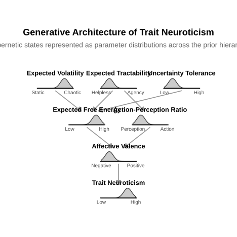

Towards an Active Inference Personality Framework: The Core Prior Cascade (CPC) Model of the Self
Dominique Makowski
School of Psychology, University of Sussex
Sussex Centre for Consciousness Science, University of Sussex
Author Note
Dominique Makowski  https://orcid.org/0000-0001-5375-9967
https://orcid.org/0000-0001-5375-9967
The authors have no conflicts of interest to disclose.
Author roles were classified using the Contributor Role Taxonomy (CRediT; credit.niso.org) as follows: Dominique Makowski: project administration, data curation, formal analysis, investigation, visualization, writing – original draft, and writing – review & editing
Correspondence concerning this article should be addressed to Dominique Makowski, School of Psychology, University of Sussex, Brighton BN1 9RH, UK, Email: D.Makowski@sussex.ac.uk
Abstract
The Core Prior Cascade (CPC) Model is a hierarchical generative account of personality and individual differences grounded in the Free Energy Principle and active inference. In contrast to descriptive psychometric frameworks that identify behavioural phenotypes, the CPC Model proposes that observable personality traits represent the downstream expressions of deeply entrenched probabilistic priors: hierarchically organised beliefs governing an agent’s expectations about environmental volatility, action tractability, and self–world boundary structure. Three tiers of prior structure are identified — Existential Hyperpriors, encoding global parameters of volatility, agency, and temporal self-extension; Boundary and Relational Priors, governing Markov blanket permeability and sensory grounding; and Epistemic Meta-Priors, regulating error-resolution strategies and self-model coherence. From this hierarchical structure, five latent factors are hypothesised — Epistemic Plasticity, Cybernetic Stability, Blanket Permeability, Temporal Extension, and Self-Model Stability — which are argued to constitute the generative mechanisms underlying the phenotypic variance captured by existing descriptive models including the Big Five, behavioural inhibition and activation systems, attachment theory, and sensation seeking. The CPC Model is presented as a principled, mechanistic complement to existing descriptive frameworks, offering testable predictions regarding the hierarchical structure of individual differences and differential psychopathological vulnerability.
Impact Statement
The Core Prior Cascade Model provides a mechanistic, mathematically grounded account of how hierarchical prior structure generates the full range of observable personality phenotypes, offering a principled bridge between the Free Energy Principle and the scientific study of individual differences.
Keywords: active inference, free energy principle, personality, individual differences, predictive processing, cybernetics, hyperpriors
Towards an Active Inference Personality Framework: The Core Prior Cascade (CPC) Model of the Self
Introduction
Personality psychology faces a persistent explanatory gap. Descriptive frameworks — most prominently the Big Five model of personality traits (mccrae1992introduction?; goldberg1990alternative?) — have proven remarkably successful at organising individual differences in behaviour, affect, and cognition. Yet their structural parsimony comes at a theoretical cost: these models describe what varies across individuals but offer limited purchase on why such variation exists or how it is generated and maintained. A mechanistic account has remained elusive — one capable of specifying the processes that produce, in one individual, the characteristic pattern we label Neuroticism, and in another, the contrasting configuration associated with Openness or Conscientiousness.
The Free Energy Principle [FEP; (friston2010free?)] and its process theory, active inference, offer a principled candidate for such a generative account. Under the FEP, all self-organising biological systems minimise the upper bound on their own surprise — formally expressed as variational free energy — by maintaining and continuously updating probabilistic generative models of their sensory environment. Crucially, this minimisation operates both through perceptual inference (revising internal models to fit sensory signals) and through active inference (acting on the world to bring sensory signals into conformity with predictions). Applied to the domain of personality, this framework implies that characteristic individual differences do not reflect fixed trait properties of the organism but rather the downstream consequences of deeply entrenched probabilistic priors: beliefs the agent’s predictive architecture treats as near-inviolable constraints on all subsequent inference and action. Personality, on this account, is not a static label but a characteristic cybernetic strategy.
The present paper proposes the Core Prior Cascade (CPC) Model, a hierarchical framework that organises these foundational priors across three tiers of abstraction and influence. At the apex sit Existential Hyperpriors — the most fundamental assumptions the agent holds about the volatility of its environment, the tractability of prediction error through action, and the ultimate temporal horizon of the self. These global parameters cascade downward to constrain a second tier of Boundary and Relational Priors, governing the permeability and sensory grounding of the agent’s Markov blanket — the statistical boundary demarcating self from environment (friston2019markov?). These in turn constrain a third tier of Epistemic Meta-Priors, governing the agent’s characteristic strategies for minimising free energy across the perception–action cycle.
The CPC Model is explicitly positioned not as a replacement for existing descriptive frameworks but as a generative account of the mechanisms underlying the phenotypes those frameworks identify. What the Big Five describe at the level of behavioural output — and what the Cybernetic Big Five Theory [CB5T; (deyoung2015cybernetic?)] begins to explain at the level of cybernetic function — the CPC Model proposes to account for at the level of the hierarchical prior structure from which such function emerges. In doing so, it offers testable structural predictions and a principled basis for understanding individual differences in psychopathological vulnerability.
The Core Prior Cascade Model
The central architectural claim of the CPC Model is that the cascade is not merely correlational. Higher-tier priors do not merely co-vary with lower-tier ones; they constrain the solution space available to them. A Tier 1 configuration of extreme volatility and low tractability does not merely predict certain Tier 3 epistemic strategies — it forecloses others. This hierarchical determination is what differentiates the CPC Model from multivariate trait models in which dimensions are statistically correlated but conceptually orthogonal. The following sections specify the dimensions at each tier, moving from the most global and abstract to the most proximal and context-sensitive.
Tier 1: Existential Hyperpriors
Existential hyperpriors occupy the apex of the cascade hierarchy. They encode the agent’s most fundamental assumptions about the nature of its environment and the ultimate tractability of its predictive project. Because they operate at the highest level of abstraction, perturbations at this tier propagate throughout the entire system. They are described here as “existential” because they concern not merely strategic preferences for error minimisation but the agent’s basic orientation to its own existence in time — questions of agency, safety, and finitude.
Volatility Prior
The volatility prior encodes the agent’s baseline expectation regarding the rate of change in the environment’s hidden states — the underlying generative structure the agent’s model attempts to track. An agent with a high volatility prior expects the environment’s generative rules to shift rapidly, which forces a systematic discounting of historical learning and a near-continuous anticipation of prediction error. Past model updates are rapidly deprecated because the agent expects the underlying structure they tracked has already changed. Conversely, an agent with a low volatility prior expects the environment to be highly structurally stable over time, affording the accumulation of high-precision long-term models and a characteristic orientation toward order and environmental mastery. The volatility prior constitutes one of the primary Tier 1 parameters because it sets the time horizon over which all downstream inference is meaningful: an agent cannot maintain stable Tier 2 and Tier 3 strategies in an environment it expects to be fundamentally unpredictable.
Tractability Prior
The tractability prior encodes the agent’s baseline expectation of whether prediction errors, once encountered, can be resolved through the agent’s own active inference. A high tractability prior reflects the belief that action reliably reduces error — that the gap between the agent’s internal model and the sensory world is bridgeable through purposive agency. This prior disposition produces approach behaviour, behavioural activation, and sustained engagement with uncertainty, because the agent expects that exploration will ultimately yield resolvable error. A low tractability prior reflects the expectation that action generates unresolvable error or that the system lacks the capacity to shift external states into alignment with its internal model — a formal analogue of learned helplessness (seligman1972learned?). Low tractability drives epistemic shielding (the suppression of precise sensory signals to avoid errors that cannot be remedied) and behavioural inhibition as the energetically efficient response to expected futility. The tractability prior is explicitly distinguished from the volatility prior, though the two may correlate: an agent in a genuinely volatile environment may rationally develop low tractability expectations, while an agent with a constitutional low tractability prior may perceive even stable environments as intractably uncertain.
Irreducible Uncertainty Tolerance
Irreducible uncertainty tolerance is a reactive parameter governing the agent’s response when epistemic foraging has failed — when active sampling of informative sensory states has not resolved a prediction error. It is formally distinct from the tractability prior: where tractability concerns the agent’s prior belief about whether action can resolve error, uncertainty tolerance concerns the agent’s capacity to sustain functioning when a prediction error proves genuinely unresolvable post hoc. Crucially, these parameters can dissociate: an agent with a high tractability prior may be surprisingly brittle upon encountering genuine irreducibility, having rarely needed to develop tolerance for unresolvable error; an agent with chronically low tractability may develop high baseline tolerance, having habituated to the persistent presence of residual uncertainty. High uncertainty tolerance reflects the capacity to accept irreducible error — an epistemic humility that permits adequate functioning without forcing premature model updates or false closure. Low uncertainty tolerance drives premature cognitive closure, distress in the face of ambiguity, and a tendency to force lower-level models to accommodate incomplete or contradictory data at the cost of model accuracy.
Affective Valence
Affective valence is defined as the characteristic phenomenological tone of the agent’s expected free energy signal. Within the FEP, persistent negative affect is interpretable as the felt correlate of chronically elevated expected free energy: the agent continuously anticipates unresolvable prediction errors, and this anticipation is experienced as anxiety, dysphoria, or anhedonia. Affective valence is treated as an explicit Tier 1 dimension — rather than as a mere correlate of the preceding parameters — because it carries independent predictive value and constitutes the primary experiential interface through which the higher-tier prior structure is registered by the agent itself. Positive valence reflects low baseline expected free energy: an affective tone of approach, safety, and reward anticipation associated with a belief that the world is broadly navigable. Negative valence reflects chronically elevated expected free energy: persistent threat anticipation, vigilance, or hedonic blunting. This dimension maps directly onto the construct of Neuroticism in descriptive models (eysenck1967biological?; mccrae1992introduction?) and provides the felt experiential counterpart to the tractability prior. The CPC framework’s key claim is that Neuroticism is not a primary trait but the downstream phenomenological consequence of Tier 1 hyperprior configuration — specifically, the experienced signature of low tractability combined with high volatility expectations.
Terminal Prior
The terminal prior governs how the agent models its own ultimate structural dissolution. Within the FEP, mortality salience functions as a hyperprior precision-weighting problem: confrontation with finitude forces the agent to resolve or suppress the prediction error of anticipated self-model cessation (greenberg1986terror?; becker1973denial?). The temporal distance over which the agent’s self-model projects itself before anticipating dissolution — the temporal horizon of the self — constitutes one of the primary axes of Tier 1 variation.
Three configurations are identified. Disengagement reflects an attenuation of the temporal self-model and takes two functionally distinct forms. Passive disengagement involves a diffuse failure of deep temporal planning characterised by generalised low precision on future-directed inference and a fatalistic or anhedonic orientation: the agent drifts rather than actively converging on future states. Active cessation-seeking represents a catastrophically precise prior converging on systemic shutdown as the optimal policy: the expected free energy of all future states is evaluated as unresolvably high, rendering structural cessation the lowest-free-energy attractor. This latter configuration constitutes the formal active inference analogue of Thanatos and maps onto clinical suicidal ideation at its extreme. Integration reflects authentic acceptance of finitude: expected free energy is balanced across temporal horizons without needing to suppress mortality salience, and the agent optimises for present-horizon goals without either withdrawing from the future or frantically extending the self into it. Transcendence involves extending the Markov blanket across time through legacy — cultural, symbolic, or biological — such that the agent’s self-model is projected to outlive the physical substrate. Transcendence and Integration may represent two configurations along a continuous dimension of temporal self-extension, while disengagement constitutes a qualitatively distinct attractor state.
Tier 2: Boundary and Relational Priors
Boundary and relational priors govern the expected state of the interface between the agent’s internal model and the external world — the functional properties of the Markov blanket as a dynamic, inference-regulating boundary. These priors are constrained by Tier 1 parameters: an agent whose Tier 1 configuration imposes conditions of extreme volatility and low tractability has correspondingly fewer viable configurations available at Tier 2. The three dimensions at this tier concern the gradient of coupling between self and world, the precision allocated to social inference, and the sensory modality that serves as the agent’s fundamental ground truth.
Permeability Prior
The permeability prior governs the relative precision weighting the agent assigns to self-referential priors versus exteroceptive and social signals. Formally, this is not a question of the Markov blanket becoming literally permeable — a dissolved blanket takes the subject with it — but rather an adjustment of the gradient of influence across the blanket: how strongly external states are permitted to update internal ones, and vice versa. This maps onto Bakan’s (bakan1966duality?) foundational distinction between agency and communion, and onto the attachment styles described by Bowlby (bowlby1969attachment?) and Ainsworth: avoidant (high differentiation, low coupling), anxiously-preoccupied (high dissolution, high coupling with low tractability), and secure (calibrated coupling, high tractability).
The differentiation drive reflects the expectation that internal states must remain structurally distinct from external states — a low-coupling, rigid-blanket configuration associated with drives for autonomy, individuation, and status maintenance. At its extreme, the differentiation drive motivates dominance-seeking as an active inference strategy: forcing the social environment to synchronise with the agent’s internal model achieves error minimisation through environmental subjugation rather than internal revision. The dissolution drive reflects the expectation that internal states should synchronise with external states — a high-coupling, permeable-blanket configuration associated with drives for affiliation, merging, and collective regulation. Agents with a strong dissolution drive are oriented toward cooperative rather than competitive modes of free energy minimisation and are characterised by heightened sensitivity to social prediction errors.
Sensory Anchoring Prior
The sensory anchoring prior governs the relative precision weighting assigned to the foundational sensory channels the agent uses as its ultimate evidential ground truth — the informational basis to which the generative model appeals when resolving higher-tier prediction errors. This defines the informational thickness of the Markov blanket. Exteroceptive anchoring reflects a baseline trust directed outward: the system prioritises environmental states — visual, auditory, spatial — to validate its internal models. The self is constituted in relation to external spatial coordinates and exteroceptive feedback, such that environmental regularities serve as the primary scaffolding for self-model stability. Interoceptive anchoring reflects a baseline trust directed inward: the continuous monitoring of cardiac, respiratory, and visceral signals forms the bedrock of reality-testing for the self-model. The minimal self is tightly bound to internal homeostatic and physiological rhythms, and selfhood is primarily grounded in the body’s internal milieu. This dimension bears directly on individual differences in interoceptive sensitivity and their documented relationship to affective and somatic psychopathology (craig2002feel?; seth2013interoceptive?).
Tier 3: Epistemic Meta-Priors
Epistemic meta-priors govern how the agent prefers to minimise free energy within the constraints established by Tiers 1 and 2. Where the upper tiers set the parameters of the agent’s fundamental orientations, Tier 3 concerns the characteristic strategies deployed in navigating prediction errors across the perception–action cycle. They are “meta-priors” in the sense that they constitute beliefs about the optimal policy for updating beliefs — second-order priors about how the generative model itself should be managed.
Precision Bias
Precision bias concerns the relative weighting assigned to internal beliefs versus incoming prediction errors. A prior-heavy, top-down bias reflects high precision on internal beliefs relative to sensory evidence: the agent minimises free energy by assimilating incoming signals into existing models, filtering out contradictory data, or acting to bring the world into alignment with its predictions. This configuration favours model stability and coherence at the cost of sensitivity to genuine environmental change. A sensory-heavy, bottom-up bias reflects high precision on incoming prediction errors relative to prior beliefs: the agent minimises free energy by rapidly revising internal models to accommodate new evidence. This configuration favours environmental tracking at the cost of stability, and may render the agent vulnerable to destabilising belief updates in conditions of high sensory noise.
Action-Perception Precision
The agent cannot explicitly select between active and perceptual inference — both occur continuously — but individuals differ systematically in the relative precision assigned to each modality when confronted with free energy. An action-heavy configuration places high precision on the agent’s capacity to alter external states: the primary mode of free energy minimisation is active environmental transformation — exerting control, manipulating circumstances, forcing external reality into conformity with the internal model. This maps onto external locus of control and behavioural dominance, and intersects with the differentiation drive at Tier 2. A perception-heavy configuration places lower precision on action efficacy relative to sensory updating: the agent minimises free energy primarily through belief revision, attentional reorientation, and accommodation of the environment rather than action upon it. This maps onto internal locus of control and accommodative cognitive styles, and in its extreme form may contribute to behavioural inhibition when the tractability prior is insufficient to sustain action-oriented strategies.
Epistemic Foraging Drive
The epistemic foraging drive governs the expected information gain the agent assigns to sampling high-variance, boundary-testing states. An agent with high foraging drive actively seeks environments — somatic or semantic — that inject prediction errors into the system, because the agent expects that such errors, once processed, will reduce long-term uncertainty and prevent overfitting of the generative model. This is the active inference analogue of sensation-seeking (zuckerman1994behavioral?). An agent with low foraging drive prefers highly predictable, low-variance environments and minimises voluntary exposure to uncertainty.
The CPC Model distinguishes two functionally separable subtypes of foraging, hypothesised to be partially orthogonal rather than a single continuum. Somatic foraging involves testing the physical Markov blanket through biological edge-seeking — injecting prediction errors into the physiological system to prove the existence and resilience of the minimal, bodily self. At its mild end, somatic foraging characterises voluntary perturbations of bodily sensing through exercise, breathwork, or interoceptive practice; at its extreme, it encompasses visceral threat-seeking that uses the unambiguous certainty of intense somatic sensation to ground and confirm the self-model. Semantic foraging involves testing the conceptual and cultural architecture of the agent’s generative model by probing the coherence of its worldview under pressure. Mild semantic foraging is characteristic of engagement with transgressive art, complex symbolic systems, or radical philosophy; extreme semantic foraging may involve deliberate phenomenological destabilisation through altered states of consciousness — functioning as a directed attempt to observe the underlying structure of the generative model by collapsing its surface representations.
Temporal Depth
Temporal depth concerns the functional time horizon over which the agent’s active inference operates. An agent with shallow temporal depth optimises primarily for immediate sensory feedback and homeostatic regulation — a reactive mode in which the generative model is evaluated against near-term outcomes. An agent with deep temporal depth simulates cascading future states and optimises for allostasis — a proactive mode in which action selection is governed by anticipated long-term model accuracy rather than immediate error reduction. Temporal depth is structurally constrained by the terminal prior at Tier 1: an agent with active cessation-seeking or passive disengagement has, by definition, a truncated effective temporal horizon, and deep temporal inference becomes structurally unavailable as a strategy.
Self-Model Coherence
Self-model coherence concerns the temporal stability and narrative integration of the agent’s highest-level self-referential priors — the precision and temporal consistency of the beliefs the agent holds about itself across successive inference cycles. Low coherence reflects a self-model that is revised rapidly and discontinuously in response to local prediction errors: the agent’s identity shifts to accommodate each new context, social input, or affective state without integration into a stable narrative structure. At the extreme, low self-model coherence maps onto identity diffusion, emotional dysregulation, and borderline-spectrum presentations — the phenomenological and clinical correlates of a self-model that cannot withstand local perturbation without fragmentation (mcadams1996personality?; erikson1968identity?). High coherence reflects a temporally integrated self-model resistant to local perturbation: the agent’s identity functions as a high-precision prior that absorbs and contextualises prediction errors without wholesale revision, constituting a key protective factor against psychopathological vulnerability under chronic stress.
Illustrative Example: The Neuroticism Cascade
Figure 1 illustrates how a specific phenotypic outcome — high Trait Neuroticism — can be traced upward through the CPC hierarchy to its prior-level origins. In the depicted profile, high expected volatility and low expected tractability at Tier 1 combine with low uncertainty tolerance to produce chronically elevated expected free energy. This propagates downward to a perception-heavy action-perception ratio at Tier 3 (the agent cannot expect action to resolve error and thus defaults to internal belief revision under threat) and ultimately generates the characteristic negative affective valence associated with Neuroticism at the observable phenotypic level. The figure thus demonstrates the CPC Model’s core architectural claim: observable personality phenotypes are the phenomenological surface of a prior configuration extending across multiple hierarchical levels.
── Attaching core tidyverse packages ──────────────────────── tidyverse 2.0.0 ──
✔ dplyr 1.2.0 ✔ readr 2.2.0
✔ forcats 1.0.1 ✔ stringr 1.6.0
✔ ggplot2 4.0.2 ✔ tibble 3.3.1
✔ lubridate 1.9.5 ✔ tidyr 1.3.2
✔ purrr 1.2.1
── Conflicts ────────────────────────────────────────── tidyverse_conflicts() ──
✖ dplyr::filter() masks stats::filter()
✖ dplyr::lag() masks stats::lag()
ℹ Use the conflicted package (<http://conflicted.r-lib.org/>) to force all conflicts to become errorsFigure 1
Generative architecture of Trait Neuroticism as an illustrative Core Prior Cascade. Cybernetic states are represented as parameter distributions positioned on dimensional axes across the prior hierarchy. The depicted profile illustrates a characteristic Neuroticism-associated configuration: high expected volatility, low tractability, and low uncertainty tolerance cascading through elevated expected free energy and a perception-heavy action-perception ratio to produce negative affective valence and high trait Neuroticism at the observable phenotypic level.

Hypothesized Factor Structure
The fifteen dimensions of the CPC Model are not hypothesised to be orthogonal. Rather, the cascade architecture implies systematic patterns of co-variation: characteristic configurations at higher tiers constrain, and therefore predict, characteristic configurations across the lower-tier dimensions. Five latent factors are hypothesised, each representing a theoretically coherent syndrome of co-varying dimensions expected to load together on factor-analytic assessment. These factors are summarised in Table 1.
Table 1
Hypothesised five-factor structure of the Core Prior Cascade Model. Each factor represents a theoretically coherent syndrome of co-varying prior dimensions.
| Factor | Primary Construct | Correlated Dimensions |
|---|---|---|
| Factor 1: Epistemic Plasticity | How the agent handles new information | Sensory-heavy precision bias; high epistemic foraging drive; high uncertainty tolerance |
| Factor 2: Cybernetic Stability | Baseline expectation of safety versus threat | High tractability prior; positive affective valence; low volatility prior (negative correlate: epistemic shielding) |
| Factor 3: Blanket Permeability | How the self relates to the group | High dissolution drive; high social inference precision |
| Factor 4: Temporal Extension | The timescale of the agent’s generative model | Deep temporal depth; terminal transcendence; high differentiation drive |
| Factor 5: Self-Model Stability | Temporal integration and coherence of the self-model | High self-model coherence; high tractability prior; deep temporal depth (negative correlates: low uncertainty tolerance; active cessation-seeking) |
These five factors carry clear functional correspondences to existing descriptive models. Epistemic Plasticity maps broadly onto Openness to Experience; Cybernetic Stability maps onto the inverse of Neuroticism, with affective valence as its phenomenological felt correlate; Blanket Permeability maps onto the affiliative pole of Agreeableness and related communion constructs; and Temporal Extension maps onto Conscientiousness. Self-Model Stability constitutes a theoretically novel factor not cleanly captured by any single Big Five dimension, intersecting with both Neuroticism and Conscientiousness while carrying distinct clinical implications. The CPC Model’s claim is not that these five factors replace the Big Five but that they identify the generative prior architecture from which Big Five phenotypes emerge as behavioural expressions.
Relationship to Existing Models
The CPC Model is positioned as a generative complement to the primary existing frameworks in personality science, rather than a competitor to them. Its relationship to each is considered in turn.
Big Five Personality Theory
The Big Five traits (mccrae1992introduction?; goldberg1990alternative?) represent the most extensively validated descriptive taxonomy of personality. The CPC Model proposes to explain the mechanisms generating the variance those dimensions capture. As noted above, Epistemic Plasticity corresponds broadly to Openness to Experience; Cybernetic Stability to the inverse of Neuroticism, with affective valence as the phenomenological felt correlate of tractability-prior configuration; Blanket Permeability to Agreeableness-related constructs; and Temporal Extension to Conscientiousness. Extraversion, however, does not map cleanly onto any single CPC dimension: it likely emerges from an interaction of the tractability prior (which drives approach motivation) and the dissolution drive (which motivates social engagement and affiliation). This non-correspondence is itself a prediction of the CPC Model — if Extraversion reflects a specific combination of prior parameters rather than a single prior dimension, it should not map onto a single CPC factor, and the model correctly predicts its distinctive pattern of cross-factor loadings.
BIS/BAS Theory
Gray’s (gray1982neuropsychology?) Behavioural Inhibition and Activation Systems provide a neurobiological account of approach and avoidance motivation. The tractability prior directly formalises the BIS/BAS distinction within a generative modelling framework. An agent with a high tractability prior exhibits the hallmarks of dominant BAS functioning — sustained approach, reward sensitivity, and behavioural activation. An agent with a low tractability prior exhibits dominant BIS functioning — behavioural inhibition, hypervigilance to potential prediction errors, and an anxiety-prone response to uncertainty. The added theoretical value is mechanistic: BIS/BAS describes the behavioural output; the CPC Model proposes the hierarchical prior structure that produces it, grounding the distinction in the mathematics of expected free energy minimisation and extending it with the upstream Tier 1 parameters (volatility prior, uncertainty tolerance) that modulate BIS/BAS expression.
Attachment Theory
The permeability prior and its associated Tier 2 dimensions map directly onto the attachment styles identified by Bowlby (bowlby1969attachment?) and Ainsworth. Avoidant attachment corresponds to a high differentiation drive with low social inference precision — the agent minimises expected free energy by maintaining rigid blanket boundaries and discounting social prediction errors. Anxious-preoccupied attachment corresponds to a high dissolution drive combined with high social inference precision and low tractability — the agent urgently seeks high coupling with attachment figures but cannot trust the tractability of that coupling to resolve relational uncertainty. Secure attachment corresponds to a calibrated permeability prior and high tractability — the agent can engage in flexible coupling because it believes the resulting prediction errors will be resolvable. The CPC formulation offers a mechanistic account of why insecure attachment styles persist: they are self-consistent configurations of interacting priors that are self-reinforcing across development, because the prior structure shapes the environments sampled and the interpretations assigned to those environments.
Sensation Seeking
Zuckerman’s (zuckerman1994behavioral?) sensation-seeking construct overlaps directly with the epistemic foraging drive. The novel contribution of the CPC framework is the proposed distinction between somatic and semantic foraging as two potentially orthogonal subtypes. Existing sensation-seeking scales conflate physical risk-taking (somatic foraging) with intellectual novelty-seeking (semantic foraging) within a single dimension. The CPC Model hypothesises these to be partially separable, predicting that the two subtypes will show discriminant validity — a hypothesis that constitutes a direct, testable empirical contribution requiring dedicated scale development and factor-analytic verification.
Cybernetic Big Five Theory
DeYoung’s (deyoung2015cybernetic?) Cybernetic Big Five Theory (CB5T) represents the most direct theoretical antecedent of the CPC Model. CB5T conceptualises the Big Five in cybernetic terms, organising traits around two meta-traits — Plasticity (exploration and flexibility) and Stability (goal-maintenance and threat response) — grounded in generic reward and threat parameters. The CPC Model builds on this framework by operationalising the underlying parameters within the formal mathematics of the FEP rather than the more informal vocabulary of cybernetics. Where CB5T describes an organism that “reacts to threat,” the CPC Model specifies that the organism experiences a chronically elevated expected free energy signal (negative affective valence) arising from a low tractability prior within a high-volatility environment. DeYoung’s Plasticity meta-trait corresponds to the behavioural output of CPC Factor 1, and his Stability meta-trait to CPC Factor 2. The CPC Model thus offers CB5T a formal mathematical grounding while extending it with dimensions — particularly the terminal prior, sensory anchoring prior, and the somatic/semantic foraging distinction — that fall outside CB5T’s current scope.
Jungian Archetypes
Jungian archetypes can be formalised within the CPC framework as deeply entrenched, phylogenetically conserved hyperpriors — low-dimensional structural attractors in the human generative model that are inherited rather than individually acquired (jung1968archetypes?). As high-precision priors embedded at the apex of the hierarchy, archetypes function as strange attractors: they normally operate in the background, shaping the solution space for higher-level inference without themselves becoming objects of explicit awareness. During episodes of extreme semantic foraging — when the agent deliberately injects prediction errors into its conceptual architecture — the surface-level generative model destabilises. As superficial models collapse, the system falls back on these deeper phylogenetic attractors to prevent catastrophic free energy increase. An archetypal encounter, on this account, constitutes the agent’s experience of reaching the bedrock of the human generative model: the ancient, conserved structural constraints that represent the species’ collective prior.
Discussion
The Core Prior Cascade Model offers several contributions to the theoretical landscape of personality science. First, by grounding individual differences in the mathematics of the Free Energy Principle, it provides a principled mechanistic account of why personality configurations are stable, why they co-vary in the patterns observed by descriptive models, and why certain configurations confer differential psychopathological vulnerability. The cascade architecture implies that interventions targeting Tier 3 parameters — as in most cognitive and behavioural therapies — will have limited durability unless Tier 1 and Tier 2 priors are also addressed, since deep stability and chronic suffering are maintained by the prior configuration at the highest levels of the hierarchy, not by surface-level epistemic strategies.
Second, the distinction between somatic and semantic epistemic foraging constitutes a theoretically motivated prediction not generated by existing models. If confirmed by discriminant validity evidence, this distinction would have implications for understanding heterogeneity within sensation-seeking, risk tolerance, and creative openness, and for the differential phenomenology of body-anchored versus concept-anchored approaches to self-exploration.
Third, the terminal prior provides a formal active inference account of temporal self-extension and its pathological extremes. The active cessation-seeking pole of the disengagement configuration, in particular, offers a mechanistic reframing of suicidal ideation as a specific prior configuration — the agent’s rational minimisation of expected free energy given a prior structure that assigns unresolvably high expected free energy to all available future states — rather than merely a symptom category.
Several limitations and open questions remain. The CPC Model is currently a theoretical framework without direct empirical operationalisation. The construction of a valid measurement instrument capable of assessing the proposed prior parameters — rather than their behavioural phenotypes — constitutes the primary empirical challenge ahead. Self-report measures of prior structure are inherently indirect: priors are not accessible to introspection in the way that behaviours and explicit attitudes are, and introspective reports may primarily reflect the phenomenological output of the prior structure rather than the structure itself. Computational modelling approaches, in which parameter estimates are inferred from performance on paradigms designed to stress specific inference processes, may offer more direct operationalisation.
Additionally, the proposed five-factor structure is hypothetical and awaits empirical validation. Factor-analytic assessment will be necessary to determine the actual latent structure of co-variation across CPC dimensions, and it is plausible that the factor structure will vary across populations and developmental periods. Future work should prioritise the development of a compact self-report or behavioural instrument capable of indexing the key CPC dimensions, the design of computational modelling paradigms for prior parameter estimation, and longitudinal investigation of how prior structure evolves across development and in response to therapeutic intervention.
Social Inference Prior
The social inference prior concerns the precision the agent assigns to modelling the hidden states of other agents — the computational resources allocated to mentalising. An agent with high social inference precision deeply invests in simulating others’ internal models, generating rich predictive representations of social others’ beliefs, intentions, and affective states. This manifests as heightened empathy and vigilance to social cues, but also as elevated susceptibility to social prediction errors: the more precise the model of another agent, the more costly any violation of that model. An agent with low social inference precision treats other agents more as physical environmental variables than as nested cognitive systems, producing lower susceptibility to social prediction errors but reduced capacity for the cooperative inference that high social precision affords.